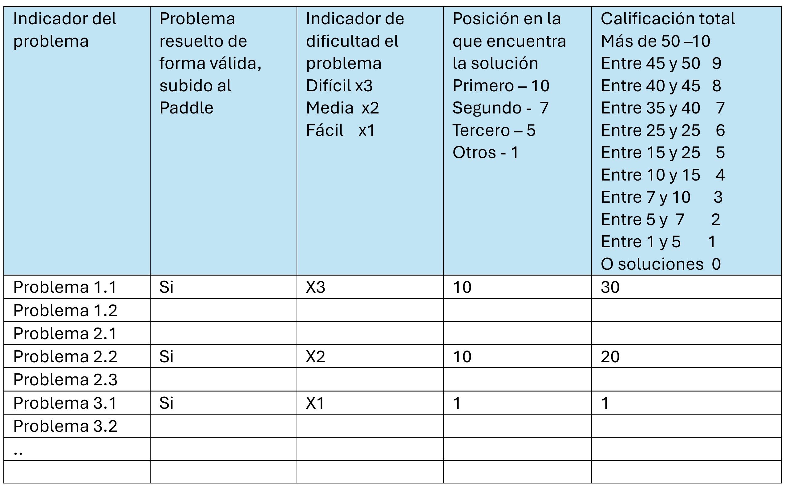
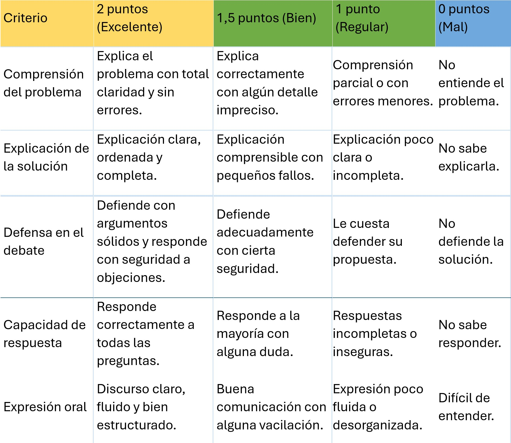

.
Las dos tareas a realizar se evaluarán de la siguiente forma:
Tarea 1
La primera técnica de evaluación será Observación Sistemática. Para ello usaremos el instrumento ficha de observación. Una vez comenzado, cada vez que un grupo encuentre una solución, y la documente, será revisada por el profesor, que anotará si la solución es correcta, está documentada, y lo indicará el resto de grupos. En base al número de problemas solucionados, al indicador de dificultad del problema, y a si la solución no la ha proporcionado antes ningún otro grupo, se obtendrá una calificación.
Posibles variantes: en caso de que muchos alumnos resuelvan problemas a la vez, se anotarán y se revisarán una vez cumplido el tiempo de realización. Si algún problema no puede resolverse, se valorará indicar el proceso de intento de solución.
La ficha de observación, para cada grupo, será la siguiente:

Tarea 2
Para realizar un aprendizaje del mayor número de técnicas de solución de problemas, saber el grado de participación del alumno en el grupo, y a modo de debate, cada alumno explicará y defenderá una de sus soluciones (la que el profesor estime que aporta más al grupo). En base a su capacidad de explicar y debatir la solución planteada, obtendrá una calificación.
La rúbrica se completará mientras se expone el problema.
